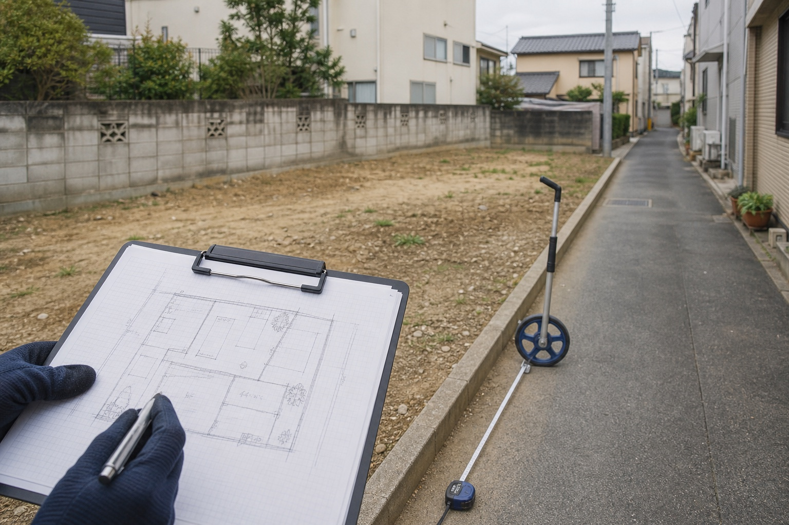
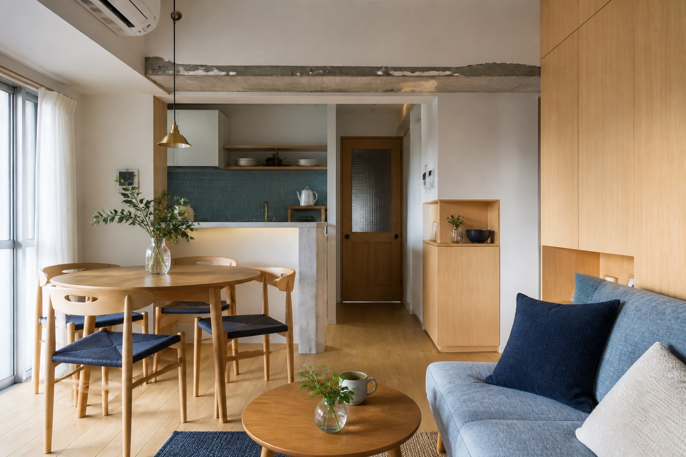

01

マンション・戸建て
住み替えや相続など、時期と暮らしの事情を含めて進めます。
マンション、戸建て、土地、一棟アパート・ビルなど、居住用から収益・事業用不動産まで、購入と売却を支援します。売却では、市場に広く情報を届けて買主を探す「仲介」と、当社または買取事業者が直接取得する「買取」を比較します。
購入では、希望条件や資金計画を整理し、メリットだけでなく融資・修繕・収支・将来の売却リスクまでご説明します。残置物撤去、リフォーム、建築、管理が必要な案件も関係事業者と連携し、取引後の活用や賃貸経営まで見据えます。
物件調査と権利関係を踏まえ、どの市場へ、どの条件で届けるかを設計します。購入では持った後の収支と出口まで見ます。

査定額の大小だけで判断せず、最終的な手取りや売却後の負担まで含めて選びます。
市場で期待できる価格と、条件を確定しやすい買取価格を比べます。
売却希望時期と、販売活動・契約・引渡しまでの見通しを確認します。

必要な対応や費用を含め、最終的に残る金額の考え方を整理します。

引渡し時の状態や責任範囲など、価格以外の条件も比較します。

残置物、修繕、建物状態など、取引後に残る可能性がある負担を確認します。
物件種別によって買主も評価軸も異なります。市場と利用目的に合わせた方法を検討します。
住み替えや相続など、時期と暮らしの事情を含めて進めます。

接道、境界、建築条件、利用可能性を確認して販売方法を考えます。
賃貸状況、収支、修繕、管理を確認し、投資判断につなげます。

希望条件・資金計画と、融資・修繕・出口のリスクを並べます。
案件ごとに必要な確認は異なります。状況を把握し、選択肢を比べてから実行へ進みます。
価格、時期、条件のうち何を優先するかを確認します。

権利関係、建物状態、市場性、必要な対応を確認します。
仲介・買取や購入条件を比較し、物件ごとの戦略を組み立てます。
活用、リフォーム、建築、管理、賃貸経営まで必要な支援をつなぎます。
残置物撤去、リフォーム、建築、管理などが必要な案件は、関係事業者と連携します。売る・買うだけで区切らず、取引後に物件をどう使い、どう守るかまで見据えて支援します。
物件の状況と優先条件を確認し、比較できる材料から整えます。